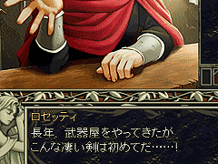
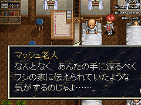
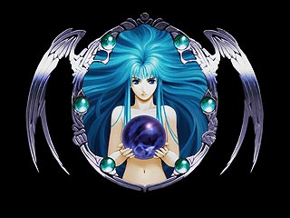
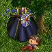
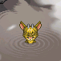
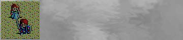
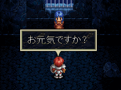

目次 > ゲームについて > 日本Falcom 攻略 > Ys > 情報
らんの眼
Ys(イース) Ys Eternal(VE)/Ys Complete
| 概要 | 情報 | ボス戦 |
| 敵キャラ一覧 | アイテム一覧 | 攻略チャート |
| 地図 | ダウンロード | イースの本 |
| 経験値表 | 地名一覧 | タイムアタック |
| ETERNAL / Complete 比較 | キャラクター一覧 | |
| Ys 攻略へ | 目次へ戻る |
| [ 1 ] [ 2 ] [ 3 ] [ 4 ] [ 5 ] [ 6 ] [ 7 ] [ 8 ] [ 9 ] |
| 装備に驚いてもらえる |
| 「SILVER SWORD」を持った状態でミネアの町のロッゼティの武器屋へ行ったり、「SILVER ARMER」か「SILVER SHIELD」を持った状態でディオスの防具屋へ行き、「店主と話す」を選択すると、銀装備を見て驚いてくれます。  |
| SILVER SHIELD の持ち主 |
| ミネアの町のクラーゼの診察所にいる患者の中に、「SILVER SHIELD」の持ち主がいます。「SILVER SHIELD」を持った状態で彼に話しかけると、運命を感じ、改めて「SILVER
SHIELD」を譲ってくれます。  |
| オープニング画面 |
| Ys I Complete のオープニングはレアのバージョンと、フィーナのバージョンの2 種類が存在します。どうやら、ゲームを起動するごとに切り替わるようです。さて、どっちがレアでどっちがフィーナか分かりますか?  |
| Ys I Complete の隠しデータ(?) |
| リソースエディタでYs1_win.exe (Ys I Complete の実行ファイル)を開くと、BMP ファイルを見ることができます。 何か条件を満たすとゲーム中で見られるのでしょうか。 (Ys II のリリア(T シャツにスカート?)や敵キャラ、それと変なルーがいますね)  (ダルク＝ファクトがSILVER SHIELD を盗んだ現場でしょうか? でも被害者が別人です)  (沼・・・いや、温泉につかるルーの姿でしょうか) |
| OpeningOld の隠しデータ(?) |
| リソースエディタでOpeningOld (Ys I Complete についてくるYs ETERNAL のオープニングが見られる実行ファイル)を開くと、BMP
ファイルを見ることができます。  (おそらくPC-98 かPC-88 版イースの、フィーナ護衛のシーンでしょう) |
| アドルをしゃべらせる |
| Ys I Complete でしか使えません。 Aｌｔ＋P と入力すると、文字を入力できるダイアログが表示されます。そこに、アドルにしゃべらせたい言葉を入力します。 その後、P を押すと、アドルが先ほど入力した言葉をしゃべります。  |
| [ 1 ] [ 2 ] [ 3 ] [ 4 ] [ 5 ] [ 6 ] [ 7 ] [ 8 ] [ 9 ] |
| 概要 | 情報 | ボス戦 |
| 敵キャラ一覧 | アイテム一覧 | 攻略チャート |
| 地図 | ダウンロード | イースの本 |
| 経験値表 | 地名一覧 | タイムアタック |
| ETERNAL / Complete 比較 | キャラクター一覧 | |
| ページ上部へ | Ys 攻略へ | 目次へ戻る |